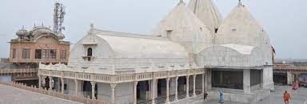
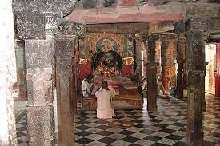
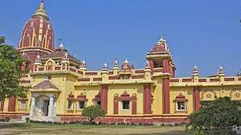
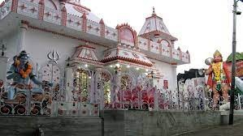

-
Banke Bihari Temple

Shri Bankey Bihari Mandir is a Hindu temple dedicated to Lord Krishna, in the holy city of Vrindavan in the Mathura district of Uttar Pradesh. It is situated near Shri RadhaVallabh Temple.This temple is among the 7 temples of Thakur of Vrindavan including Shri RadhaVallabh Ji, Shri Govind Dev Ji and four others. Bankey Bihari Ji was originally worshipped at Nidhivana. Bankey means “bent in three places” and Bihari means “supreme enjoyer.” The image of Lord Krishna stands in the Tribhanga posture.
-
Nand Bhawan Temple
 Built on the same spot where once the residence of Nand Maharaja stands, Nanda Bhavan, also touted as Nandagram Temple, is one of the highly revered temples in Nandgaon. Located atop of Nandishwar Hill, the popular temple traces its history from the 19th-century. It was built by Raja Rupa Singh and is the only shrine where the foster parents (Nand and Yashoda) of Lord Krishna are worshipped. Inside the temple complex, there is located the idols of Lord Krishna and Balaram
-
Geeta Mandir
 Gita Temple is a Hindu temple located in the Mathura district of Uttar Pradesh, India. This temple is also known as Birla Mandir. This temple is dedicated to Lord Vishnu. This temple is located on the Mathura Vrindavan Marg. The temple was built by Seth Jugal Kishore Birla, the owner of the Birla Group.